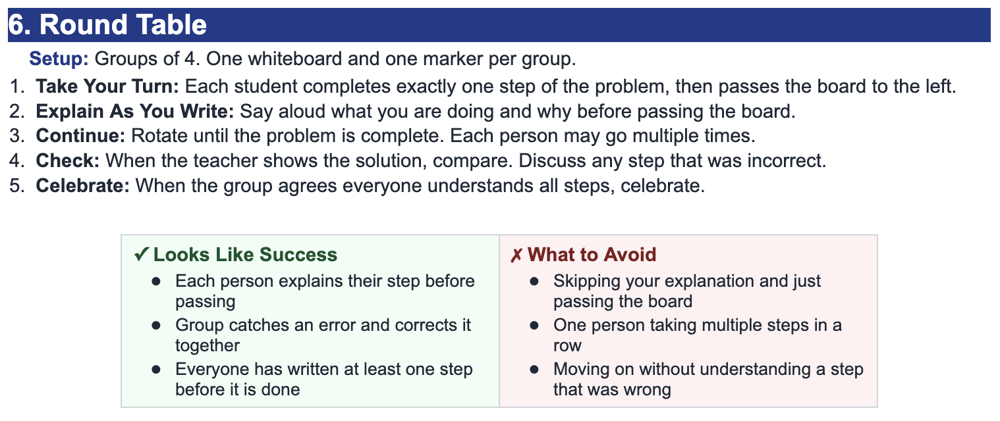

Problem 3
Write an equation for the graphed quadratic transformation.


For $g(x)=f(x-3)$, describe the transformation from $f(x)$ to $g(x)$.
The graph shifts right $3$ units.
The subtraction happens inside the function input, so $x-3$ moves the graph to the right.
For $g(x)=|x-6|+2$, identify the parent function and the transformations.
The parent function is $f(x)=|x|$.
The graph shifts right $6$ units and up $2$ units.
The vertex moves from $(0,0)$ to $(6,2)$.
Write an equation for the graphed quadratic transformation.
From the graph, identify the parent function as quadratic and use the vertex/shape to describe the transformation.
A correct vertex-form equation should match the graph's shift, opening direction, and vertical stretch/compression.
A student says $g(x)=f(x-5)$ shifts the graph left $5$ units because of the minus sign. Explain the error and give the correct transformation.
The student is mixing up outside and inside transformations.
Inside the input, $x-5$ means the input must be $5$ larger to create the same output.
So $g(x)=f(x-5)$ shifts the graph right $5$ units.
For each equation, identify the information that is easiest to see.
State the zeros from each equation.
Find the first differences and second differences for the table.
$$\begin{array}{c|ccccc}x&0&1&2&3&4\\ \hline y&3&6&11&18&27\end{array}$$
Then state whether the table could represent a quadratic function.
First differences: $3,5,7,9$.
Second differences: $2,2,2$.
Because the second differences are constant, the table could represent a quadratic function.
A quadratic table has constant second difference $6$. What is the value of $a$ if the $x$-values increase by $1$?
Explain your reasoning.
For equally spaced $x$-values increasing by $1$, the constant second difference is $2a$.
So $2a=6$, which means $a=3$.
A quadratic has vertex $(-1,-6)$ and passes through $(1,2)$.
Use vertex form $y=a(x+1)^2-6$.
Substitute $(1,2)$: $2=a(2)^2-6$.
$8=4a$, so $a=2$.
The equation is $y=2(x+1)^2-6$.
Since $a>0$, the graph opens up.
A quadratic has zeros $2$ and $8$, and passes through $(0,32)$.
Use intercept form $y=a(x-2)(x-8)$.
Substitute $(0,32)$: $32=a(-2)(-8)=16a$, so $a=2$.
Equation: $y=2(x-2)(x-8)$.
The axis of symmetry is halfway between the zeros: $x=5$.
Vertex: $y=2(5-2)(5-8)=-18$, so the vertex is $(5,-18)$.
A student writes an equation for a quadratic with vertex $(-3,4)$:
$$y=(x-3)^2+4$$
Identify the error and write the correct equation using $a=1$.
The expression $(x-3)^2$ gives a vertex with $h=3$, not $h=-3$.
For vertex $(-3,4)$, use $(x+3)^2$.
The correct equation is $y=(x+3)^2+4$.
The height of a launched object is modeled by a quadratic function. The object is on the ground at $t=1$ second and $t=7$ seconds. At $t=0$, the object is $21$ feet high.
The zeros are $1$ and $7$, so $h(t)=a(t-1)(t-7)$.
Use $h(0)=21$: $21=a(-1)(-7)=7a$, so $a=3$.
The model is $h(t)=3(t-1)(t-7)$.
The axis of symmetry is halfway between $1$ and $7$, so $t=4$.
$h(4)=3(3)(-3)=-27$ with this positive $a$, which does not model a launched object above the ground between the intercepts.
This means the context requires $a<0$; if $h(0)=21$ and roots are $1$ and $7$, the given information is inconsistent with a downward-opening height model.
State the slope of each line.
For each pair of points, identify the change in $y$, the change in $x$, and the slope.
Write an equation of the line through the points:
$$(1,5)\quad \text{and}\quad (4,17)$$
The slope is $\frac{17-5}{4-1}=\frac{12}{3}=4$.
Use $y=mx+b$ and point $(1,5)$: $5=4(1)+b$, so $b=1$.
The equation is $y=4x+1$.
A student says:
“The slope of the line through $(2,5)$ and $(6,13)$ is $\frac{2}{4}$ because $6-2=4$ and $13-5=8$, so I put the smaller number on top.”
Identify the error and find the correct slope.
Slope is change in $y$ divided by change in $x$, not the smaller number divided by the larger number.
$m=\frac{13-5}{6-2}=\frac{8}{4}=2$.